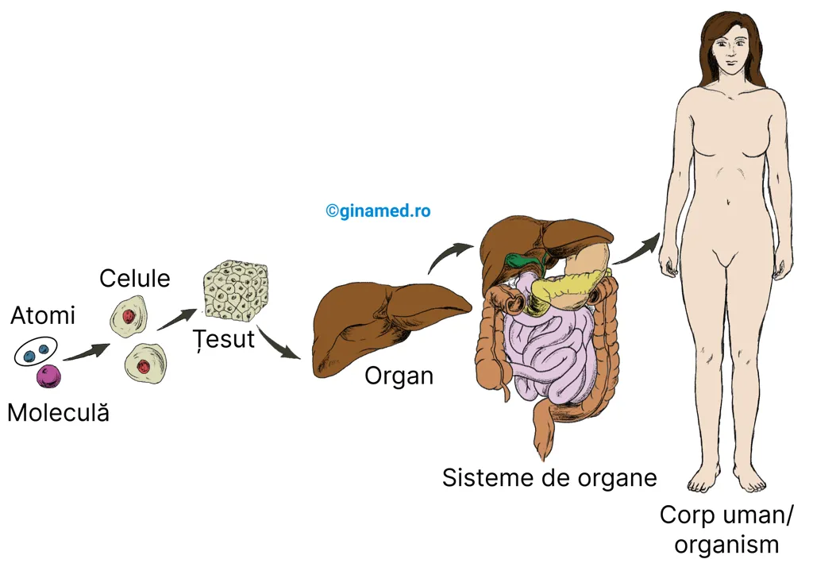
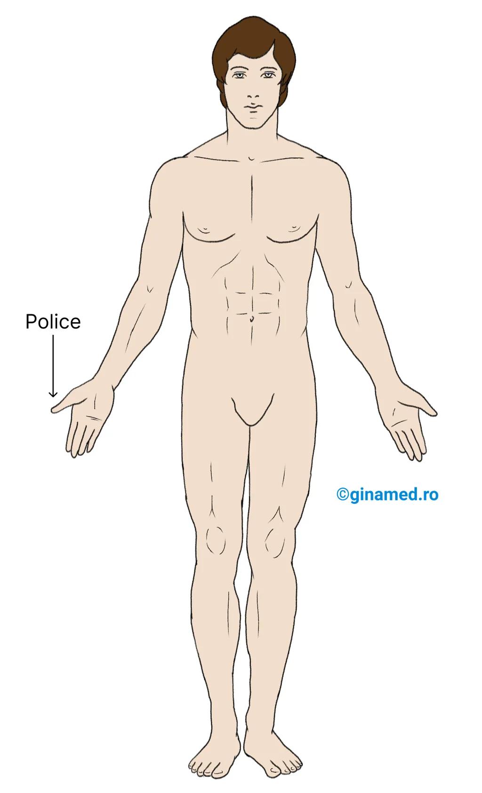
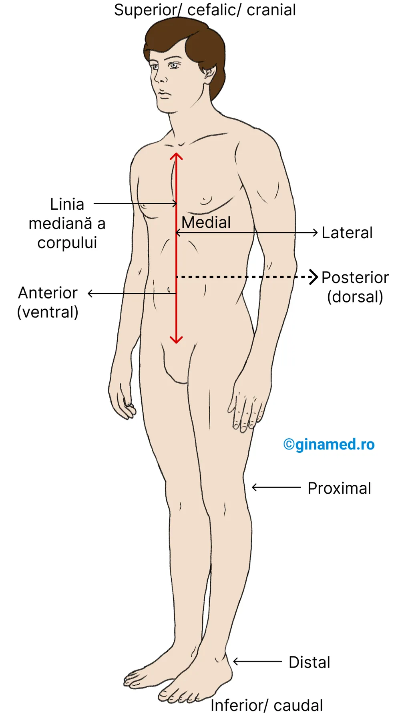
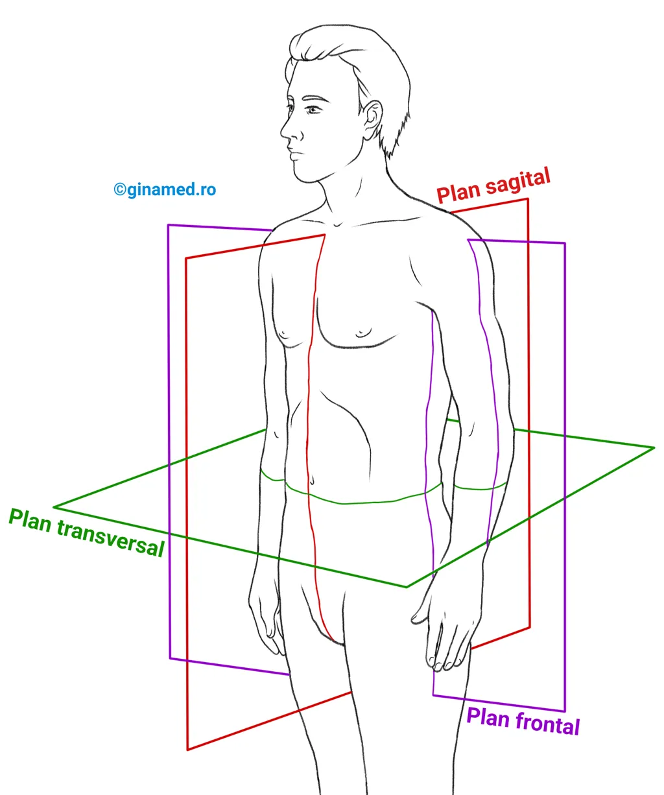
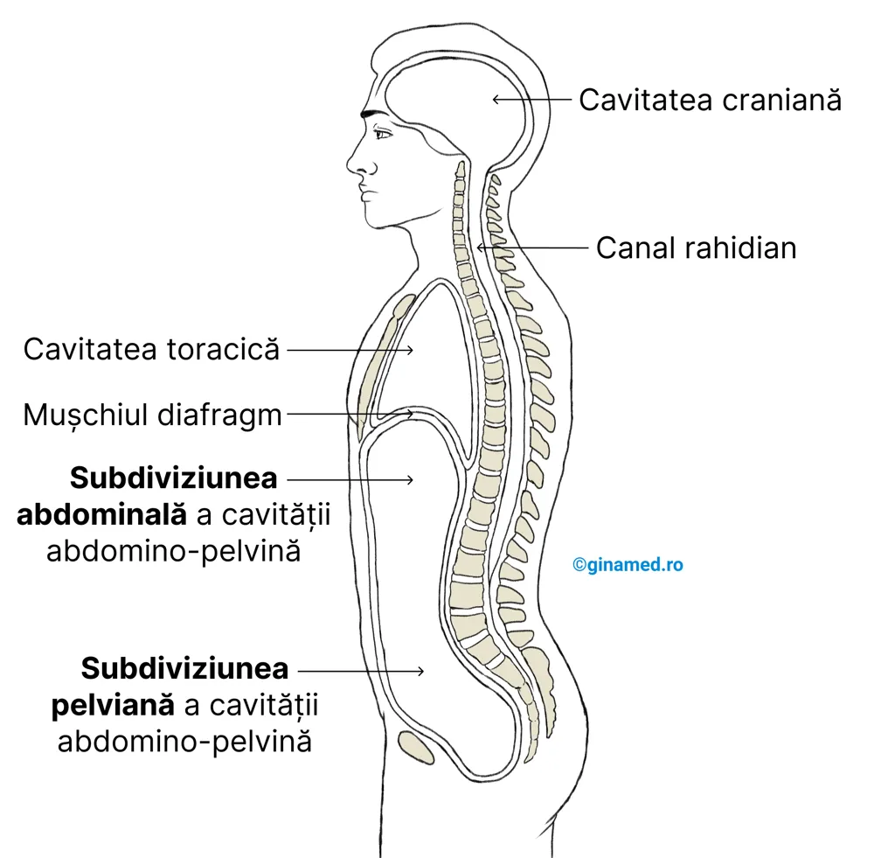
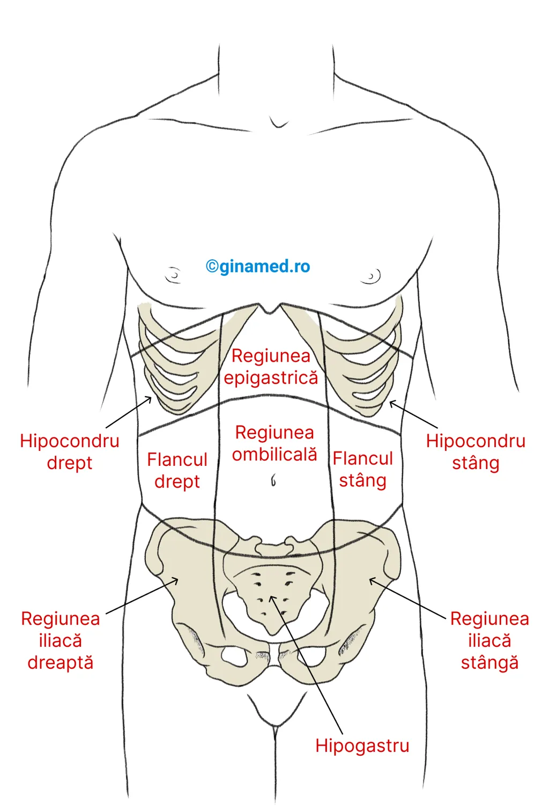

Capitolul 1 – Introducere în anatomie și fiziologie
Fundamentele pentru înțelegerea corpului uman: organizare structurală, funcții vitale, homeostazie, orientare anatomică, planuri, cavități și regiuni.
Harta capitolului
Ideea-cheie
Structura corpului oferă indicii despre funcție, iar funcția depinde de structura care o susține. De aceea anatomia și fiziologia se studiază împreună.
1.1. Introducere
Anatomia studiază structurile corpului, iar fiziologia explică modul în care acestea funcționează.
1Anatomie și fiziologie
Pentru a înțelege complexitatea corpului uman este esențial să se cunoască anatomia și fiziologia omului. Acestea fac referire la nivelurile de organizare ale corpului uman și la modul în care el funcționează.
Funcțiile corpului depind de structura sa, iar structura oferă indicii despre funcțiile pe care le îndeplinește. De exemplu, faptul că în alcătuirea plămânilor intră milioane de saci alveolari cu pereți foarte fini permite realizarea schimbului de gaze dintre oxigen și dioxid de carbon.
2Subdiviziuni ale fiziologiei
1.2. Niveluri de organizare structurală
Corpul uman este organizat de la particule foarte mici până la sisteme de organe care funcționează împreună.
1De la atom la organism
Nivelurile de organizare structurală ale corpului uman sunt:

Cel mai simplu nivel de organizare este reprezentat de atomi, particule electronomicroscopice de materie. Atomii sunt unități ale elementelor precum oxigenul, carbonul, azotul sau sodiul. Prin combinarea atomilor rezultă molecule, cum ar fi apa, clorura de sodiu, proteinele, glucidele și lipidele.
Prin asocierea mai multor molecule se formează celula, unitatea fundamentală a organismelor vii. În alcătuirea ei intră structuri subcelulare precum nucleul, mitocondriile, ribozomii și lizozomii. Exemple de celule sunt celulele nervoase, musculare și sanguine, fiecare fiind unică structural și funcțional.
2Țesut, organ, sistem
Grupul de celule care au structură similară și lucrează împreună îndeplinind aceeași funcție se numește țesut.
Două sau mai multe tipuri diferite de țesuturi alcătuiesc nivelul superior de organizare: organul. Stomacul, de exemplu, este compus din țesut epitelial, muscular, nervos și conjunctiv. Un organ funcționează ca un centru anatomic și fiziologic specializat pentru o anumită activitate.
Sistemul de organe cuprinde mai multe organe care îndeplinesc funcții complementare. Prin funcționarea împreună a sistemelor se formează organismul, cel mai înalt nivel de organizare funcțională.
3Sisteme de organe
| Sistem de organe | Componente majore | Rol fiziologic |
|---|---|---|
| Tegument | Piele, păr, unghii, glande sudoripare | Acoperă și protejează corpul. |
| Schelet | Oase, cartilaje, ligamente | Protejează corpul și oferă suport pentru mișcare și locomoție. |
| Nervos | Encefal, măduva spinării, nervi, organe de simț | Primește stimuli, integrează informații și coordonează funcțiile organismului. |
| Endocrin | Hipofiză, glande suprarenale, tiroidă, alte glande | Coordonează și integrează chimic activitățile organismului. |
| Muscular | Mușchi striați, mușchi netezi, mușchi cardiac | Realizează mișcarea corpului. |
| Digestiv | Dinți, glande salivare, esofag, stomac, intestine, ficat, pancreas | Digestia alimentelor și absorbția nutrienților solubili în hrana ingerată. |
| Respirator | Plămâni, faringe, trahee, alte căi aeriene | Colectează oxigenul și elimină dioxidul de carbon. |
| Circulator | Inimă, vase sanguine, sânge, structuri limfatice | Transportă celule și substanțe în organism. |
| Imunitar | Limfocite T, limfocite B, macrofage, structuri limfatice | Interacționează cu agenți străini. |
| Urinar | Rinichi, vezică urinară, căile urinare asociate | Îndepărtează deșeurile metabolice din sânge. |
| Reproducător | Testicule, ovare și structurile asociate aparatului reproducător | Produce celule sexuale necesare procreării. |
1.3. Funcții ale organismului
Funcțiile organismului susțin supraviețuirea, creșterea și menținerea mediului intern în limite normale.
1Metabolismul
Organismul uman, împreună cu celelalte viețuitoare, prezintă funcții care permit celulelor să desfășoare procese ce susțin creșterea și supraviețuirea și care le diferențiază de formele fără viață.
Procesele vitale, precum digestia, respirația, circulația și excreția, sunt adaptate astfel încât să ofere materia primă metabolismului și să elimine produșii de degradare.
2Mișcare, creștere și reproducere
Reproducerea umană are la bază producția de ovule și spermatozoizi și unirea acestora, cu formarea ovulului fecundat din care se va dezvolta un nou individ. Aceasta este reproducere sexuată. Reproducerea asexuată apare în procesele de creștere și reparație și constă în diviziunea unei singure celule în două celule fiice identice.
3Homeostazia
Homeostazia cumulează toate procesele care intervin în menținerea în limite normale a parametrilor mediului intern, chimic și fizic, al organismului, în ciuda variațiilor mediului înconjurător.
Organismul este în homeostazie atunci când nevoile celulelor sale sunt satisfăcute și funcțiile sale se desfășoară normal. Toate sistemele de organe intervin în menținerea homeostaziei, iar compoziția fluidelor organismului rămâne relativ constantă.
Condițiile de stres, precum boala, căldura, durerea sau lipsa de oxigen, dezechilibrează mediul intern al organismului și perturbă homeostazia.
4Mecanisme de feedback
Condițiile interne ale organismului înregistrează variații constante, prevenite de valori extreme prin sisteme de autoreglare denumite mecanisme de feedback.
Un mecanism de feedback are o valoare de referință, adică valoarea normală a unui factor variabil, de exemplu temperatura. Variația este recepționată de unul sau mai mulți receptori, care transmit informația unui centru de control. Acolo informația este integrată și este eliberat răspunsul necesar către efectori, iar efectorii readuc organismul spre homeostazie.
1.4. Termeni direcționali
Termenii direcționali indică poziția părților corpului în raport cu poziția anatomică.
1Poziția anatomică
Referința tuturor termenilor direcționali este poziția anatomică: corpul în poziție verticală, în ortostatism, cu privirea înainte, picioarele apropiate, membrele superioare pe lângă corp, palmele orientate înainte și policele orientat spre exterior.

2Direcții anatomice

3Planurile corpului
Corpul uman poate fi traversat de numeroase suprafețe drepte imaginare denumite planuri, care oferă puncte de reper privind organele corpului.

1.5. Cavitățile și regiunile corpului
Cavitățile corpului sunt spații în care se află organe interne, iar regiunile anatomice ajută la localizarea lor clinică.
1Cavitățile principale
Cavitățile corpului sunt spații la nivelul cărora se află organe interne. Cavitățile principale sunt cavitatea posterioară și cavitatea anterioară.
Cavitatea toracică este delimitată de coaste și de mușchii intercostali. La interior este subdivizată în cavitatea pleurală stângă și dreaptă, în care se află plămânii, și cavitatea pericardică, în care se află inima.
Cavitatea pericardică este dispusă medial față de cavitățile pleurale, într-o regiune numită mediastin. Este delimitată de două foițe, una viscerală și una parietală, care delimitează la interior un spațiu îngust.

2Mediastin și cavitatea abdomino-pelviană
Mediastinul este o regiune din cavitatea toracică la nivelul căreia se găsesc toate componentele acestei cavități, cu excepția plămânilor: inima, timusul aflat în mediastinul superior, o parte din esofag, traheea, bronhiile, vasele sanguine și limfatice și nodulii limfatici.
Cavitatea abdomino-pelviană mai este numită cavitate peritoneală. În subdiviziunea abdominală se află stomacul, intestinul subțire și gros, splina, ficatul și alte organe. În subdiviziunea pelviană se află vezica urinară, rectul și anumite organe ale aparatului reproducător.
3Regiunile abdomino-pelviene
Cavitatea abdomino-pelviană poate fi divizată în 9 regiuni anatomice.
Prin intersecția a două linii imaginare, una orizontală și una verticală, în centrul cavității abdomino-pelviene se delimitează 4 regiuni utile în practica clinică: cadranul superior drept, cadranul superior stâng, cadranul inferior drept și cadranul inferior stâng.

4Membranele seroase
Pereții cavității abdominale și organele de la acest nivel sunt acoperite de o membrană fină formată din două foițe foarte apropiate una de cealaltă: o foiță viscerală, care învelește organul sau viscerul, și o foiță parietală, care căptușește cavitatea.
Această membrană se numește membrană seroasă deoarece între foițe există o cantitate mică de lichid lubrifiant, numit lichid seros. Lichidul facilitează alunecarea organelor pe pereții cavităților corpului și între ele, fără frecare.
Fiecare dintre cele trei membrane seroase prezintă o foiță parietală și o foiță viscerală. De exemplu, peritoneul are o foiță parietală care căptușește cavitatea abdominală și pelviană și o foiță viscerală care acoperă diferite organe din această cavitate.
Spațiul dintre cele două foițe ale pleurei, pericardului și peritoneului delimitează cavitățile cu același nume: pleurală, pericardică și peritoneală.
Organismul mai prezintă și alte cavități dispuse la nivelul capului: cavitatea orală, cavitatea nazală, urechea medie și orbita.